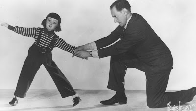

Walking Figures
9/17/2009
Question: I've read many times that some Ventriloquist used walking figures. I would like to know what is a walking figure? How does it's mechanism work?
* * * * *
Answer: The only walking figures I have handled personally were made by Frank Marshall. There really was no "mechanism" as such. Each leg was one single "stiff legged" piece, hinged at the hip. By holding the figure upright and leaning slightly to one side, (one foot against the floor and the other off the floor), the figure would be moved forward while at the same time swinging it slightly to cause the leg free from the floor to swing forward. Then the figure would be tilted to the opposite side so the forward foot was held against the floor and the movements repeated. As the movements were repeated in a smooth practiced manner, the figure would appear to "walk". Clever, but I question the practicality for today's ventriloquist's. (The photo of Senor Wences you see below was taken in 1942. Yes, that is a vent figure and not a live girl - the awkward jointed angle at the hip of the figure's left leg is one clue.)
* * * * *
Answer: The only walking figures I have handled personally were made by Frank Marshall. There really was no "mechanism" as such. Each leg was one single "stiff legged" piece, hinged at the hip. By holding the figure upright and leaning slightly to one side, (one foot against the floor and the other off the floor), the figure would be moved forward while at the same time swinging it slightly to cause the leg free from the floor to swing forward. Then the figure would be tilted to the opposite side so the forward foot was held against the floor and the movements repeated. As the movements were repeated in a smooth practiced manner, the figure would appear to "walk". Clever, but I question the practicality for today's ventriloquist's. (The photo of Senor Wences you see below was taken in 1942. Yes, that is a vent figure and not a live girl - the awkward jointed angle at the hip of the figure's left leg is one clue.)

Reader Comment: Thanks so much for posting this photo! I am a HUGE Wences fan! I remember seeing this years ago in "Newsy Vents". Matter of fact, I took a photo of that image with my camera, sent it to him, & had him autograph it. I have MANY autographs of him & am the one who sent you the cassete of his record. I also was blessed with meeting the great man at the testimonial luncheon Al Getler held in his honor April 2nd, 1989. Thanks again! W.S.